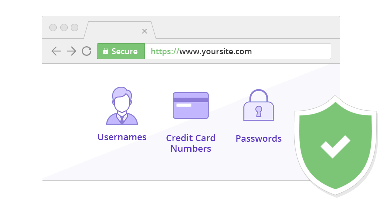
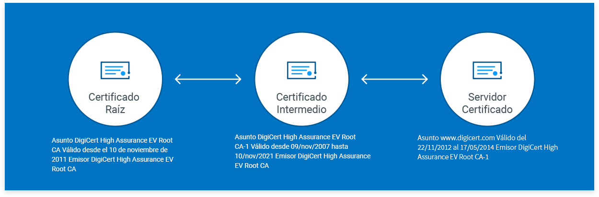
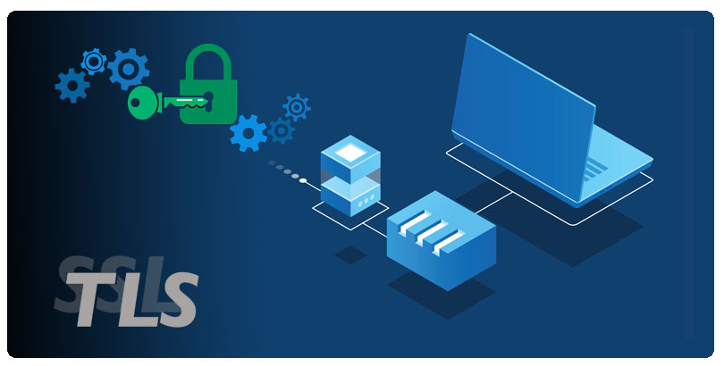

Redes Informaticas
Aqui te informaremos sobre la capa de sockets segura (ssl) y la capa de transporte segura (tls)
¿Qué es el SSL?
SSL es la tecnología de seguridad estándar para establecer un enlace cifrado entre un servidor web y un navegador. Este enlace protege la privacidad de todos los datos que se comuniquen entre el servidor web y el navegador.Los datos que compartes pueden ser de cualquier tipo, desde información bancaria, fiscal, de identidad, tus contactos, etc. En la jerga de los hackers, esta intercepción se conoce como «ataque de intermediario». El ataque puede ocurrir de varias maneras, pero una de las más comunes es cuando un hacker coloca un pequeño programa de espionaje indetectable en el servidor que aloja un sitio web. Ese programa espera en segundo plano y, cuando un visitante comienza a escribir sus datos en el sitio, se activa para captar la información y enviársela al hacker.
TLS Y SSL
Uno de los servicios de seguridad más ampliamente utilizados es el de capa de sockets segura (SSL) y el posterior estándar de Internet conocido como capa de transporte segura (TLS), definido este último en el RFC 2246. SSL es un servicio de propósito general implementado como un conjunto de protocolos que hacen uso de TCP. En este nivel, existen dos elecciones de implementación. Para una completa generalidad, SSL (o TLS) podría suministrarse como parte de la familia de protocolos subyacente y, de esta forma, ser transparente a las aplicaciones. Alternativamente, SSL puede integrarse en paquetes específicos. Por ejemplo, los navegadores Netscape y Microsoft Explorer vienen equipados con SSL y la mayoría de los servidores web implementan este protocolo.
¿Qué es el TLS?
El TLS es la siguiente generación del Certificado SSL : permite y garantiza el intercambio de datos en un entorno securizado y privado entre dos entes, el usuario y el servidor, mediante aplicaciones como HTTP, POP3, IMAP, SSH, SMTP o NNTP. Nos referimos al TLS como la evolución del SSL dado que está basado en éste último certificado y funciona de manera muy similar, básicamente: encripta la información compartida. 
INFORMACIÓN
CERTIFICADO DIGITAL
Es un documento digital único que garantiza la vinculación entre una persona o entidad con su llave pública (La llave pública es usada para cifrar la información, haciendo una analogía, es como la llave utilizada para cerrar una puerta y mantener fuera a cualquier persona mientras que la llave privada se usa para descifrar, es decir, la llave que abre la puerta y sólo la posee la persona autorizada, por lo tanto ésta debe mantenerse en secreto). Contiene información de su propietario como nombre, dirección, correo electrónico, organización a la que pertenece y su llave pública, así como información propia del certificado por mencionar: periodo de validez, número de serie único, nombre de la AC que emitió, firma digital de la AC cifrada con su llave privada y otros datos más que indican cómo puede usarse ese certificado.
¿CÓMO FUNCIONAN LOS TLS Y SSL PARA ASEGURAR LOS DATOS?

Cuando un visitante vaya a su sitio, su navegador web buscará el certificado SSL/TLS de su sitio. A continuación, el navegador realizará un «apretón de manos» para comprobar la validez de su certificado y autentificar su servidor. Si el certificado SSL no es válido, tus usuarios pueden encontrarse con el error “su conexión no es privada”, por lo que abandonen tu sitio web. Una vez que el navegador de un visitante determina que su certificado es válido y autentica su servidor, crea esencialmente un enlace cifrado entre él y su servidor para transportar los datos de forma segura.
¿CUÁL DEBERÍA ELEGIR?
Como tal, SSL no es un protocolo totalmente seguro en 2019 y en adelante.TLS, la versión más moderna de SSL, es segura. Es más, las versiones recientes de TLS también ofrecen ventajas de rendimiento y otras mejoras. No sólo es TLS más seguro y eficiente, sino que la mayoría de los navegadores web modernos ya no soportan SSL 2.0 y SSL 3.0. Por ejemplo, Google Chrome dejó de ser compatible con SSL 3.0 en 2014 y la mayoría de los principales navegadores tienen previsto dejar de ser compatibles con TLS 1.0 y TLS 1.1 en 2020. De hecho, Google empezó a mostrar notificaciones de advertencia ERR_SSL_OBSOLETE_VERSION en Chrome.